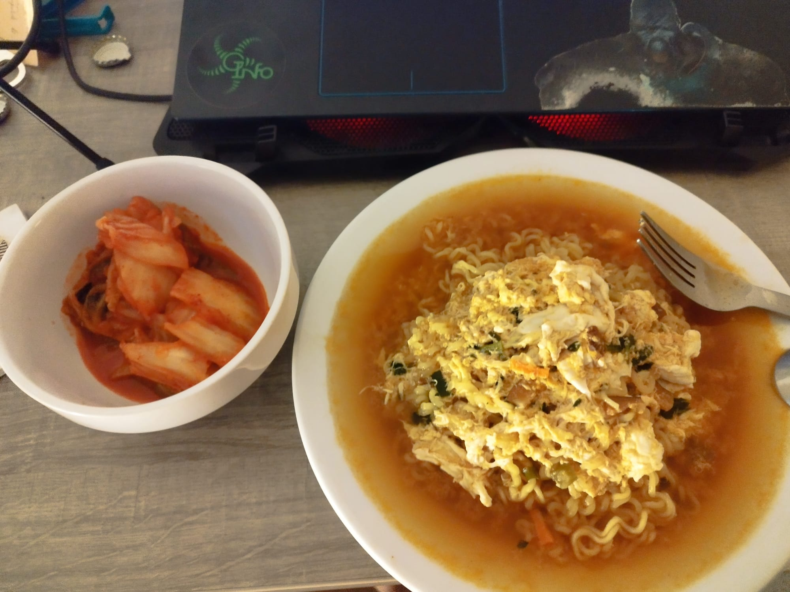
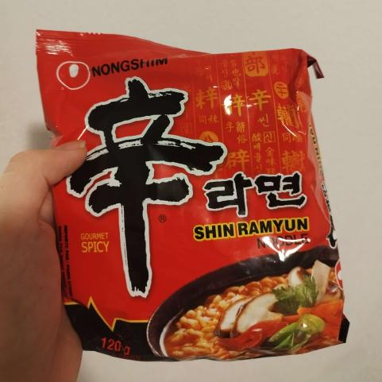

Nouilles instantanées


Ingrédients (pour 1 personne):
- 1 paquet de nouilles instantanés
- 1 oeuf
Instructions
- Suivre les instructions sur le paquet
- Une fois les nouilles cuites, les servir dans l'assiette SANS le bouillon
- Tout en laissant le bouillon sur le feu, y rajouter l'oeuf et laisser 1 minute
- Rajouter le bouillon aux pâtes. Bon appétit !
Suggestions d'accompagnement : Kimchi (grande surface c'est bien, c'est trop dur à préparer), viande,
pousses de haricots mungo.